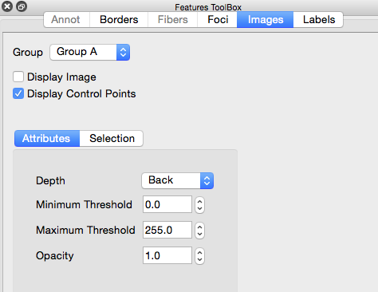
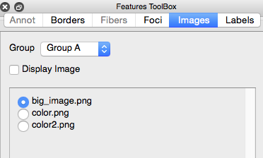

Images
This functionality is deprecated and may be removed in a future release of Connectome Workbench. To use the new image display functionality: (1) Select Media in the Display section of the toolbar; (2) Click the Media tab in the Overlay Toolbox and select image(s) for display.
The Images Tab in the Features Toolbox
contains options for display and selection of images in the
background.
- Group: identifies the Image
group for the Active Tab. Tabs assigned to the same Group will
display the same images with the same attributes.
- Display Image toggles image
display on and off.
Images Attributes
- Depth: Chooses where to place image in relation to
models. Back places image behind models; Front places
image in front of models; and Middle place images in the middle
of the models.
- Minimum Threshold : Is used to filter out pixels in the
image that have a grayscale value less than this value.
- Maximum Threshold : Is used to filter out pixels in the
image that have a grayscale value greater than this value.
- Opacity : Blend image with models in front of the
image.

Images Selection Chooses image displayed in the
background.
